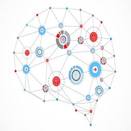
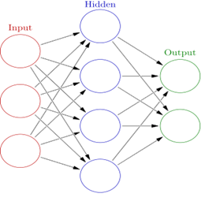

HTML5
HTML5 (HyperText Markup Language, versión 5) es la quinta revisión importante del lenguaje básico de la World Wide Web, HTML. HTML5 especifica dos variantes de sintaxis para HTML: una «clásica», HTML (text/html), conocida como HTML5, y una variante XHTML conocida como sintaxis XHTML5 que deberá servirse con sintaxis XML (application/xhtml+xml). Esta es la primera vez que HTML y XHTML se han desarrollado en paralelo. La versión definitiva de la quinta revisión del estándar se publicó en octubre de 2014.
Al no ser reconocido en viejas versiones de navegadores por sus nuevas etiquetas, se recomienda al usuario común actualizar su navegador a la versión más nueva, para poder disfrutar de todo el potencial que provee HTML5.
El desarrollo de este lenguaje de marcado es regulado por el Consorcio W3C.
HTML5 establece una serie de nuevos elementos y atributos que reflejan el uso típico de los sitios web modernos. Algunos de ellos son técnicamente similares a las etiquetas "div" y "span", pero tienen un significado semántico, como por ejemplo "nav" (bloque de navegación del sitio web) y "footer".
Videos Relacionados:
- Introducción a HTML5
- Curso HTML 5. Presentación. Vídeo 1
- Tutoriales HTML5: 1. Estructura Básica
- Página Web Profesional con HTML5 y CSS3. Creación de HTML

CSS3
CSS3 es la última evolución del lenguaje de las Hojas de Estilo en Cascada (Cascading Style Sheets), y pretende ampliar la versión CSS2.1. Trae consigo muchas novedades altamente esperadas, como las esquinas redondeadas, sombras, gradientes, transiciones o animaciones, y nuevos layouts como multi-columnas, cajas flexibles o maquetas de diseño en cuadrícula (grid layouts).
Las partes experimentales son particulares para cada navegador y deberían ser evitadas en entornos de producción, o usadas con extrema precaución, ya que tanto la sintaxis como la semántica pueden cambiar en el futuro.
El Nivel 2 de CSS necesitó 9 años, desde Agosto de 2002 hasta Junio de 2011, para alcanzar el estado de Recomendación. Esto fué debido al hecho de que algunas características secundarias fueron retiradas de las especificaciones globales, con el fin de acelerar la normalización de las características no problemáticas, el Grupo de Trabajo CSS de la W3C, en una decisión referida como la doctrina Beijing dividió CSS en componentes más pequeños llamados módulos cada uno de estos módulos es ahora una parte independiente del lenguaje y se dirije a la estandarización a su propio ritmo mientras algunos módulos son ya recomendados de la W3C, otros todavía son borradores iniciales tambíen se añaden nuevos módulos cuando se identifican nuevas necesidades.
Formalmente, no existe un estandar de CSS3 por sí solo cada módulo es estandarizado independientemente, por lo que el estandar CSS consiste en CSS2.1 modificado y extendido por módulos terminados, no necesariamente todos con el mismo nivel numérico por tanto, puede ser definido un panorama del CSS estandar listando (enumerando) CSS2.1 y los módulos maduros.
Videos Relacionados:
- Curso Basico de CSS desde 0 - Introduccion
- CSS3 Tutorial
- Cómo hacer animaciones en CSS3 usando Keyframes
- Curso profesional de CSS3 de 0 a 100 - 01 Introducción

JAVASCRIPT
JavaScript (abreviado comúnmente JS) es un lenguaje de programación interpretado, dialecto del estándar ECMAScript. Se define como orientado a objetos, basado en prototipos, imperativo, débilmente tipado y dinámico.
Se utiliza principalmente en su forma del lado del cliente (client-side), implementado como parte de un navegador web permitiendo mejoras en la interfaz de usuario y páginas web dinámicas4 aunque existe una forma de JavaScript del lado del servidor(Server-side JavaScript o SSJS). Su uso en aplicaciones externas a la web, por ejemplo en documentos PDF, aplicaciones de escritorio (mayoritariamente widgets) es también significativo.
Desde el 2012, todos los navegadores modernos soportan completamente ECMAScript 5.1, una versión de javascript. Los navegadores más antiguos soportan por lo menos ECMAScript 3. La sexta edición se liberó en julio del 2015.
JavaScript se diseñó con una sintaxis similar a C, aunque adopta nombres y convenciones del lenguaje de programación Java. Sin embargo, Java y JavaScript tienen semánticas y propósitos diferentes.
Videos Relacionados:
- ¿Qué es JavaScript? bien explicado
- Curso Básico de Javascript desde 0 - Introducción
- Javascript, Desde Web hasta Hardware
- Javascript en el 2018 | Frameworks, Libraries, Apis, Web Assembly, Nodejs, Mongodb, y Más
PROGRESSIVE WEB APPS
Progressive web apps (o aplicaciones web progresivas), es un término que se da a una nueva generación de aplicaciones que incrementan su funcionalidad, conforme las capacidades del dispositivo en el que se ejecutan, incrementan, de ahí la palabra progresiva. La siguiente parte del nombre web, hace referencia a que se construyen utilizando estándares de desarrollo web, algunos ya conocidos como HTML, CSS y javaScript; y una nueva generación de APIs de javaScript. La parte final app es porque las Progressive Web Apps se comportan como aplicaciones web nativas, pero usan tecnologías web.
En términos muy simplistas, son páginas web que se comportan como aplicaciones nativas. Es un oración muy simple, pero también muy profunda. Las apps nativas (iOs, Android por ejemplo), históricamente han tenido una serie de ventajas sobre las páginas web, ¿como cuáles? Almacenamiento local, ejecutarse offline, notificaciones push, performance, acceso a hardware, acceso al homescreen del dispositivo, entre otros.
Con el paso del tiempo, la brecha entre las web apps y las apps nativas, se ha ido reduciendo. Hace aproximadamente 6 años, HTML5 comenzó a tomar forma, como el concepto que constituía nuevas etiquetas, CSS3 y nuevas APIs de javaScript, cuyo objetivo era hacer las páginas web, más parecidas a las aplicaciones nativas. Ahí, conocimos a localStorage y webRTC, tuvimos acceso al hardware, desde el GPS, hasta la cámara, pasando claro por el micrófono y los altavoces; también nos presentaron nuevos eventos touch, drag&drop, web workers, web sockets que no eran hardware precisamente, pero que buscaban acercar la experiencia de las interfaces web, a la de las apps nativas.
HTML5 fue un salto necesario para la web, pero no parecía llenar por completo el vacío.
Videos Relacionados:
- PWA | Progressive Web Apps, Introducción a las Aplicaciones Web Progresivas
- Introducción a Progressive Web Apps (PWA)
- PWA - ¿Que son las aplicaciones web progresivas PWA? ¿Como hacer aplicaciones web móviles?
- Las aplicaciones PWA son el FUTURO
INTELIGENCIA ARTIFICIAL
La inteligencia artificial (IA), también llamada inteligencia computacional, es la inteligencia exhibida por máquinas. En ciencias de la computación, una máquina «inteligente» ideal es un agente racional flexible que percibe su entorno y lleva a cabo acciones que maximicen sus posibilidades de éxito en algún objetivo o tarea. Coloquialmente, el término inteligencia artificial se aplica cuando una máquina imita las funciones «cognitivas» que los humanos asocian con otras mentes humanas, como por ejemplo: «aprender» y «resolver problemas».
A medida que las máquinas se vuelven cada vez más capaces, tecnología que alguna vez se pensó que requería de inteligencia se elimina de la definición. Por ejemplo, el reconocimiento óptico de caracteres ya no se percibe como un ejemplo de la «inteligencia artificial» habiéndose convertido en una tecnología común.3 Avances tecnológicos todavía clasificados como inteligencia artificial son los sistemas de conducción autónomos o los capaces de jugar al ajedrez o al Go.
Según Takeyas (2007) la IA es una rama de las ciencias computacionales encargada de estudiar modelos de cómputo capaces de realizar actividades propias de los seres humanos en base a dos de sus características primordiales: el razonamiento y la conducta.
En 1956, John McCarthy acuñó la expresión «inteligencia artificial», y la definió como «la ciencia e ingenio de hacer máquinas inteligentes, especialmente programas de cómputo inteligentes».
Videos Relacionados:
- ¿Qué es la inteligencia artificial?
- ¿Las máquinas pueden pensar? Inteligencia Artificial - CuriosaMente 125
- Titanes de la Inteligencia Artificial: El Futuro de Ayer Hoy - José Elias (eliax.com) | GeneXus GX27
- ¿Es la inteligencia artificial un peligro para la humanidad?
-
Machine learning
El aprendizaje automático o aprendizaje automatizado o aprendizaje de máquinas (del inglés, "Machine Learning") es el subcampo de las ciencias de la computación y una rama de la inteligencia artificial, cuyo objetivo es desarrollar técnicas que permitan que las computadoras aprendan. De forma más concreta, se trata de crear programas capaces de generalizar comportamientos a partir de una información suministrada en forma de ejemplos.
Es, por lo tanto, un proceso de inducción del conocimiento. En muchas ocasiones el campo de actuación del aprendizaje automático se solapa con el de la estadística computacional, ya que las dos disciplinas se basan en el análisis de datos. Sin embargo, el aprendizaje automático también se centra en el estudio de la complejidad computacional de los problemas. Muchos problemas son de clase NP-hard, por lo que gran parte de la investigación realizada en aprendizaje automático está enfocada al diseño de soluciones factibles a esos problemas. El aprendizaje automático puede ser visto como un intento de automatizar algunas partes del método científico mediante métodos matemáticos.
El aprendizaje automático tiene una amplia gama de aplicaciones, incluyendo motores de búsqueda, diagnósticos médicos, detección de fraude en el uso de tarjetas de crédito, análisis del mercado de valores, clasificación de secuencias de ADN, reconocimiento del habla y del lenguaje escrito, juegos y robótica.
Algunos sistemas de aprendizaje automático intentan eliminar toda necesidad de intuición o conocimiento experto de los procesos de análisis de datos, mientras otros tratan de establecer un marco de colaboración entre el experto y la computadora. De todas formas, la intuición humana no puede ser reemplazada en su totalidad, ya que el diseñador del sistema ha de especificar la forma de representación de los datos y los métodos de manipulación y caracterización de los mismos. Sin embargo, las computadoras son utilizadas por todo el mundo con fines tecnológicos muy buenos.
Videos Relacionados:
-

Deep learning
Aprendizaje profundo (en inglés, deep learning) es un conjunto de algoritmos de clase aprendizaje automático (en inglés, machine learning) que intenta modelar abstracciones de alto nivel en datos usando arquitecturas compuestas de transformaciones no lineales múltiples.
El aprendizaje profundo es parte de un conjunto más amplio de métodos de aprendizaje automático basados en asimilar representaciones de datos.
Una observación (por ejemplo, una imagen) puede ser representada en muchas formas (por ejemplo, un vector de píxeles), pero algunas representaciones hacen más fácil aprender tareas de interés (por ejemplo, "¿es esta imagen una cara humana?") sobre la base de ejemplos, y la investigación en este área intenta definir qué representaciones son mejores y cómo crear modelos para reconocer estas representaciones.
Varias arquitecturas de aprendizaje profundo, como redes neuronales profundas, redes neuronales profundas convolucionales, y redes de creencia profundas, han sido aplicadas a campos como visión por computador, reconocimiento automático del habla, y reconocimiento de señales de audio y música, y han mostrado producir resultados de vanguardia en varias tareas.
Videos Relacionados:
-

Red Neuronal
Las redes neuronales (también conocidas como sistemas conexionistas) son un modelo computacional basado en un gran conjunto de unidades neuronales simples (neuronas artificiales), de forma aproximadamente análoga al comportamiento observado en los axones de las neuronas en los cerebros biológicos. Cada unidad neuronal está conectada con muchas otras y los enlaces entre ellas pueden incrementar o inhibir el estado de activación de las neuronas adyacentes. Cada unidad neuronal, de forma individual, opera empleando funciones de suma. Puede existir una función limitadora o umbral en cada conexión y en la propia unidad, de tal modo que la señal debe sobrepasar un límite antes de propagarse a otra neurona. Estos sistemas aprenden y se forman a sí mismos, en lugar de ser programados de forma explícita, y sobresalen en áreas donde la detección de soluciones o características es difícil de expresar con la programación convencional.
Las redes neuronales suelen consistir en varias capas o un diseño de cubo, y la ruta de la señal atraviesa de adelante hacia atrás. Propagación hacia atrás es donde se utiliza la estimulación hacia adelante o en el "frente" para restablecer los pesos de las unidades neuronales y esto a veces se realiza en combinación con una formación en la que se conoce el resultado correcto. Las redes modernas son un poco más libres en el sentido de que fluye en términos de estimulación e inhibición con conexiones que interactúan de una manera mucho más caótica y compleja. Las redes neuronales dinámicas son lo más avanzadas en que se pueden formar dinámicamente nuevas conexiones e incluso nuevas unidades neuronales.
El objetivo de la red neuronal es resolver los problemas de la misma manera que el cerebro humano, aunque las redes neuronales son más abstractas. Los proyectos de redes neurales modernas suelen trabajar desde unos miles a unos pocos millones de unidades neuronales y millones de conexiones que, si bien son muchas órdenes, siguen siendo de una magnitud menos compleja que la del cerebro humano, más bien cercana a la potencia de cálculo de un gusano.
Nuevas investigaciones sobre el cerebro a menudo estimulan la creación de nuevos patrones en las redes neuronales. Un nuevo enfoque está utilizando conexiones que se extienden mucho más allá y capas de procesamiento de enlace en lugar de estar siempre localizado en las neuronas adyacentes. Otra investigación está estudiando los diferentes tipos de señal en el tiempo que los axones se propagan, como el aprendizaje profundo , interpola una mayor complejidad que un conjunto de variables booleanas que son simplemente encendido o apagado.
Videos Relacionados:
CRIPTOMONEDAS
Una criptomoneda, criptodivisa (del inglés cryptocurrency) o criptoactivo es un medio digital de intercambio. La primera criptomoneda que empezó a operar fue el bitcoin en 2009 y, desde entonces, han aparecido muchas otras con diferentes características y protocolos como Litecoin, Ethereum, Ripple, Dogecoin.
En los sistemas de criptomonedas, se garantiza la seguridad, integridad y equilibrio de sus estados de cuentas (contabilidad) por medio de un entramado de agentes (transferencia de archivo segmentada o transferencia de archivo multifuente) que se verifican (desconfían) mutuamente llamados mineros, que son, en su mayoría, público en general y protegen activamente la red (el entramado) al mantener una alta tasa de procesamiento de algoritmos, con la finalidad de tener la oportunidad de recibir una pequeña propina, que se reparte de manera aleatoria.
Romper la seguridad existente en una criptomoneda es matemáticamente posible, pero el costo para lograrlo sería inasumiblemente alto. Por ejemplo, un atacante que intentase quebrar el sistema de prueba de trabajo de Bitcoin necesitaría una potencia computacional mayor que el de todo el entramado (red-enjambre) de todos los mineros del sistema, y aun así, solo tendría una probabilidad de éxito del 50% (n.º de ronda de autenticación), en otras palabras, romper la seguridad de Bitcoin exigiría una capacidad superior a la de empresas tecnológicas del tamaño de Google.
Está previsto que en el futuro la computación cuántica pueda llegar a ser una realidad, lo que rompería el equilibrio en caso de que los desarrolladores no pudieran implementar a tiempo el sistema para usar algoritmos poscuánticos, por tratarse de una tecnología propietaria.
Videos Relacionados:
- ¿Cómo funcionan las criptomonedas? (Como Bitcoin) - CuriosaMente 118
- MANERAS DE HACER DINERO CON CRIPTOMONEDAS
- INVERTIR EN CRIPTOMONEDAS [De forma rentable] – Curso de Trading de Criptomonedas y Bitcoin
- Cuando pruebas los beneficios de las criptomonedas cuesta volver al sistema tradicional
BLOCKCHAIN
Una cadena de bloques o cadena articulada, conocida en inglés como blockchain, es una estructura de datos en la que la información contenida se agrupa en conjuntos (bloques) a los que se les añade metainformaciones relativas a otro bloque de la cadena anterior en una línea temporal, de manera que gracias a técnicas criptográficas, la información contenida en un bloque sólo puede ser repudiada o editada modificando todos los bloques posteriores.
Esta propiedad permite su aplicación en entorno distribuido de manera que la estructura de datos blockchain puede ejercer de base de datos pública no relacional que contenga un histórico irrefutable de información. En la práctica ha permitido, gracias a la criptografía asimétrica y las funciones de resumen o hash, la implementación de un registro contable (ledger) distribuido que permite soportar y garantizar la seguridad de dinero digital.
Siguiendo un protocolo apropiado para todas las operaciones efectuadas sobre la blockchain, es posible alcanzar un consenso sobre la integridad de sus datos por parte de todos los participantes de la red sin necesidad de recurrir a una entidad de confianza que centralice la información. Por ello se considera una tecnología en la que la "verdad" (estado confiable del sistema) es construída, alcanzada y fortalecida por los propios miembros; incluso en un entorno en el que exista una minoría de nodos en la red con comportamiento malicioso (nodos sybil) dado que, en teoría, para comprometer los datos, un atacante requeriría de una mayor potencia de cómputo y presencia en la red que el resultante de la suma de todos los restantes nodos combinados.
Por las razones anteriores, la tecnología blockchain es especialmente adecuada para escenarios en los que se requiera almacenar de forma creciente datos ordenados en el tiempo, sin posibilidad de modificación ni revisión y cuya confianza pretenda ser distribuída en lugar de residir en una entidad certificadora.
Videos Relacionados:
- Cómo funciona Blockchain. Explicación sencilla visual en español
- ¿Cómo usar Blockchain? | Oportunidades de Negocio para tu empresa
- Blockchain: ¿Cómo usar el monedero Bitcoin?
- ¿Por qué a los BANCOS les gusta BLOCKCHAIN? - VisualPolitik
CYBERSEGURIDAD
La seguridad informática, también conocida como ciberseguridad o seguridad de tecnologías de la información, es el área relacionada con la informática y la telemática que se enfoca en la protección de la infraestructura computacional y todo lo relacionado con esta y, especialmente, la información contenida en una computadora o circulante a través de las redes de computadoras. Para ello existen una serie de estándares, protocolos, métodos, reglas, herramientas y leyes concebidas para minimizar los posibles riesgos a la infraestructura o a la información. La ciberseguridad comprende software (bases de datos, metadatos, archivos), hardware, redes de computadoras y todo lo que la organización valore y signifique un riesgo si esta información confidencial llega a manos de otras personas, convirtiéndose, por ejemplo, en información privilegiada.
La definición de seguridad de la información no debe ser confundida con la de «seguridad informática», ya que esta última solo se encarga de la seguridad en el medio informático, pero la información puede encontrarse en diferentes medios o formas, y no solo en medios informáticos.
La seguridad informática es la disciplina que se encarga de diseñar las normas, procedimientos, métodos y técnicas destinados a conseguir un sistema de información seguro y confiable.
Puesto simple, la seguridad en un ambiente de red es la habilidad de identificar y eliminar vulnerabilidades. Una definición general de seguridad debe también poner atención a la necesidad de salvaguardar la ventaja organizacional, incluyendo información y equipos físicos, tales como los mismos computadores. Nadie a cargo de seguridad debe determinar quién y cuándo puede tomar acciones apropiadas sobre un ítem en específico. Cuando se trata de la seguridad de una compañía, lo que es apropiado varía de organización en organización. Independientemente, cualquier compañía con una red debe tener una política de seguridad que se dirija a la conveniencia y la coordinación.
Videos Relacionados:
- INTRODUCCIÓN AL HACKING Y CYBERSEGURIDAD // PRESENTACIÓN
- Consejos sobre cyberseguridad
- Data Protección - Cyber Seguridad en las Pymes
- Webinar Tiempos de riesgo y cyberseguridad
REALIDAD VIRTUAL
La realidad virtual (RV) es un entorno de escenas u objetos de apariencia real. La acepción más común refiere a un entorno generado mediante tecnología informática, que crea en el usuario la sensación de estar inmerso en él. Dicho entorno es contemplado por el usuario a través de un dispositivo conocido como gafas o casco de realidad virtual. Este puede ir acompañado de otros dispositivos, como guantes o trajes especiales, que permiten una mayor interacción con el entorno así como la percepción de diferentes estímulos que intensifican la sensación de realidad.
El término realidad virtual (RV) se popularizó a finales de la década de 1980 por Jaron Lanier, uno de los pioneros del campo. Al mismo tiempo, también apareció el término Realidad Artificial (RA). En 1982 el término ciberespacio fue acuñado en una novela por W. Gibson ("Burning Chrome"). La Enciclopedia Británica describe la realidad virtual como "el uso del modelado y la simulación por computadora que permite a una persona interactuar con un entorno sensorial tridimensional (3D) artificial u otro entorno sensorial". Además, establece que "las aplicaciones de realidad virtual sumergen al usuario en un entorno generado por computadora que simula la realidad mediante el uso de dispositivos interactivos, que envían y reciben información y se usan como gafas, auriculares, guantes o trajes para el cuerpo". Por ejemplo, un usuario que usa una pantalla montada en la cabeza con un sistema de proyección estereoscópica puede ver imágenes animadas de un entorno virtual. Un término importante es presencia o telepresencia, que se puede describir como una ilusión de "estar allí".
En uso general, la presencia se define como "el hecho o condición de estar presente; el estado de estar con o en el mismo lugar que una persona o cosa; asistencia, compañía, sociedad o asociación ", aunque la presencia también tiene significados diferentes. A principios de la década de 1990, el término presencia se usaba cada vez más para describir la experiencia subjetiva de los participantes en un entorno virtual. Una definición que se usa con mayor frecuencia para entornos virtualmente generados es la de "estar en un lugar o entorno, incluso cuando uno se encuentra físicamente en otro" o, más brevemente, "estar allí".
Este tipo de definiciones siguen una metáfora del transporte, ya que el usuario percibe estar en un lugar diferente. Además de considerar la presencia como transporte, el concepto puede definirse como riqueza social cuando se utiliza para la interacción humano-humana en las organizaciones, como el grado de realismo del entorno mostrado o como grado de inmersión. Al tratar de encontrar un denominador común para todas estas definiciones, se sugirió una definición general de presencia como "ilusión perceptual de no mediación".
Videos Relacionados:
- REALIDAD VIRTUAL informatica
- Realidad Virtual-Concepto-Origenes, ventajas y desventajas
- La Mejor App de Realidad Virtual Android y iOS
- Center Informática presentó el casco de realidad virtual
REALIDAD AUMENTADA
La realidad aumentada (RA) es el término que se usa para definir la visión de un entorno físico del mundo real, a través de un dispositivo tecnológico. Este dispositivo o conjunto de dispositivos, añaden información virtual a la información física ya existente; es decir, una parte sintética virtual a la real. De esta manera; los elementos físicos tangibles se combinan con elementos virtuales, creando así una realidad aumentada en tiempo real.
La realidad aumentada es diferente de la realidad virtual: sobre la realidad material del mundo físico monta una realidad visual generada por la tecnología, en la que el usuario percibe una mezcla de las dos realidades; en cambio, en la realidad virtual el usuario se aísla de la realidad material del mundo físico para sumergirse en un escenario o entorno totalmente virtual.
Con la ayuda de la tecnología; por ejemplo, añadiendo la visión por un computador y reconocimiento de objetos, la información sobre el mundo real alrededor del usuario, se convierte en interactiva y digital. La información artificial sobre el medio ambiente y los objetos puede ser almacenada y recuperada como una capa de información en la parte superior de la visión del mundo real.
La realidad aumentada de investigación explora la aplicación de imágenes generadas por ordenador en tiempo real a secuencias de vídeo como una forma de ampliar el mundo real. La investigación incluye a este respecto el uso de pantallas colocadas en la cabeza, un monitor virtual colocado en la retina para mejorar la visualización y la construcción de ambientes controlados a partir de sensores y actuadores.
Videos Relacionados:
- ¿Qué es realidad aumentada?
- Realidad Aumentada: ¿Cómo funciona? y Usos
- Top 5: Los mejores usos para la realidad aumentada
- Apps con Realidad Aumentada para tu smartphone
REALIDAD MIXTA
La realidad mixta (RM), también llamada a veces realidad híbrida, es la combinación de realidad virtual y realidad aumentada. Esta combinación permite crear nuevos espacios en los que interactúan tanto objetos y/o personas reales como virtuales. Es decir, se puede considerar como una mezcla entre la realidad, realidad aumentada, virtualidad aumentada y realidad virtual.
El término realidad mixta no debe confundirse con el de realidad aumentada o RA. La realidad aumentada genera los estímulos a tiempo real para la interacción del usuario, los cuales se superponen sobre el entorno físico de este, mientras que la realidad mixta no sólo permite la interacción del usuario con el entorno virtual sino que también permite que objetos físicos del entorno inmediato del usuario sirvan como elementos de interacción con el entorno virtual.
En 1994 Paul Milgram y Fumio Kishino definieron el concepto de realidad mixta como cualquier espacio entre los extremos del continuo de la virtualidad. Este continuo de la virtualidad se extiende desde el mundo completamente real hasta el entorno completamente virtual, encontrándose entre medio de estos la realidad aumentada y realidad virtual.
Como ya se ha dicho, la realidad mixta permite la incorporación de objetos gráficos generados por ordenador en una escena tridimensional del mundo real o bien la incorporación de objetos reales en un mundo virtual.
Videos Relacionados:
- ¿Qué es Realidad Mixta?
- Realidad mixta: tu ordenador será capaz de transmitir sensaciones
- Desarrollo de aplicaciones - Realidad Mixta
- Windows Mixed Reality - Realidad Mixta
IOT (INTERNET DE LAS COSAS)
Internet de las cosas (en inglés, Internet of Things, abreviado IoT; IdC, por sus siglas en español) es un concepto que se refiere a la interconexión digital de objetos cotidianos con Internet. Alternativamente, Internet de las cosas es la conexión de Internet con más cosas u objetos que con personas. También, se suele conocer como Internet de todas las cosas o Internet en las cosas. Si los objetos de la vida cotidiana tuvieran incorporadas etiquetas de radio, podrían ser identificados y gestionados por otros equipos, de la misma manera que si lo fuesen por seres humanos.
El concepto de Internet de las cosas fue propuesto por Kevin Ashton en el Auto-ID Center del MIT en 1999, donde se realizaban investigaciones en el campo de la identificación por radiofrecuencia en red (RFID) y tecnologías de sensores.
Por ejemplo, si los libros, termostatos, refrigeradores, la paquetería, lámparas, botiquines, partes automotrices, entre otros, estuvieran conectados a Internet y equipados con dispositivos de identificación, no existirían, en teoría, artículos fuera de stock o medicinas caducas; sabríamos exactamente la ubicación, cómo se consumen en el mundo; el extravío sería cosa del pasado, y sabríamos qué está encendido y qué está apagado en todo momento.
El Internet de las cosas debería codificar de 50 a 100 000 millones de objetos y seguir el movimiento de estos. Se calcula que todo ser humano está rodeado, al menos, por un total de aproximadamente 1000 a 5000 objetos. Según la empresa Gartner, en el 2020 habrá en el mundo aproximadamente 26 mil millones de dispositivos con un sistema de conexión al Internet de las cosas. Abi Research, por otro lado, asegura que para el mismo año existirán 30 mil millones de dispositivos inalámbricos conectados a Internet. Con la próxima generación de aplicaciones de Internet (protocolo IPv6) se podrían identificar todos los objetos, algo que no se podía hacer con IPv4. Este sistema sería capaz de identificar instantáneamente por medio de un código a cualquier tipo de objeto.
Videos Relacionados:
- Introducción al Internet de las Cosas | IOT, The Internet of Things
- El Internet de las cosas | ¿Qué es y cómo funciona?
- Ejemplo de hasta donde llegará el Internet de las cosas
- Oportunidades de Negocio en Internet de las Cosas y sus Retos Tecnológicos
MECATRONICA
La ingeniería mecatrónica es una disciplina que sirve para diseñar y desarrollar productos que involucren sistemas de control para el diseño de productos o procesos inteligentes, lo cual busca crear maquinaria más compleja para facilitar las actividades del ser humano a través de procesos electrónicos en la industria mecánica, principalmente. Esta disciplina une la ingeniería mecánica, ingeniería electrónica, ingeniería de control e ingeniería informática. Debido a que combina varias ingenierías en una sola, su punto fuerte es la versatilidad.
Un consenso común es describir a la mecatrónica como una disciplina integradora de las áreas de mecánica, electrónica e informática cuyo objetivo es proporcionar mejores productos, procesos y sistemas industriales. La mecatrónica no es, por tanto, una nueva rama de la ingeniería, sino un concepto recientemente desarrollado que enfatiza la necesidad de integración y de una interacción intensiva entre diferentes áreas de la ingeniería.
Con base en lo anterior, se puede hacer referencia a la definición propuesta por J. A. Rietdijk: "Mecatrónica es la combinación sinérgica de la ingeniería mecánica de precisión, de la electrónica, del control automático y de los sistemas para el diseño de productos y procesos", la cual busca crear maquinaria más compleja para facilitar las actividades del ser humano a través de procesos electrónicos en la industria mecánica principalmente. Existen, claro está, otras versiones de esta definición, pero ésta claramente enfatiza que la mecatrónica está dirigida a las aplicaciones y al diseño.
La mecatrónica nace para suplir tres urgentes necesidades latentes; la primera, encaminada a automatizar la maquinaría y así lograr procesos productivos ágiles y confiables; la segunda crear productos inteligentes, que respondan a las necesidades del mundo moderno; y la tercera, por cierto muy importante, armonizar entre los componentes mecánicos y electrónicos de las máquinas, ya que en muchas ocasiones, era casi imposible lograr que tanto mecánica como electrónica manejaran los mismos términos y procesos para hacer o reparar equipos.
Videos Relacionados:
- Introducción a la Mecatrónica | MECAUNEXPO
- ¿Qué es la ingeniería mecatrónica? Todo lo que debes saber
- La carrera con mayor futuro - LA INGENIERÍA MECATRÓNICA
- MECATRONICA. Capacitarse para los autos que vendrán.
3D PRINTING
La impresión 3D es un grupo de tecnologías de fabricación por adición donde un objeto tridimensional es creado mediante la superposición de capas sucesivas de material. Las impresoras 3D son por lo general más rápidas, más baratas y más fáciles de usar que otras tecnologías de fabricación por adición, aunque como cualquier proceso industrial, estarán sometidas a un compromiso entre su precio de adquisición y la tolerancia en las medidas de los objetos producidos. Las impresoras 3D ofrecen a los desarrolladores del producto la capacidad para imprimir partes y montajes hechos de diferentes materiales con diferentes propiedades físicas y mecánicas, a menudo con un simple proceso de ensamble. Las tecnologías avanzadas de impresión 3D pueden incluso ofrecer modelos que pueden servir como prototipos de producto.
Desde 2003 ha habido un gran crecimiento en la venta de impresoras 3D. De manera inversa, el coste de las mismas se ha reducido. Esta tecnología también encuentra uso en campos tales como joyería, calzado, diseño industrial, arquitectura, ingeniería y construcción, automoción y sector aeroespacial, industrias médicas, educación, sistemas de información geográfica, ingeniería civil y muchos otros.
En los años 1976 se desarrollaron equipos y materiales de fabricación de aditivos tempranos. En 1981, Hideo Kodama, del Instituto Municipal de Investigaciones Industriales de Nagoya, inventó dos métodos de fabricación AM de un modelo de plástico tridimensional con un polímero fotoendurecible, en el que el área de exposición a los rayos UV era controlada por un patrón de máscara o transmisor de fibra de barrido. Pero el 16 de julio de 1983, Alain Le Méhauté, Olivier de Witte y Jean Claude André presentaron su patente para el proceso de estereolitografía. Fue tres semanas antes de que Chuck Hull presentase su propia patente de estereolitografía. La aplicación de los inventores franceses fue abandonada por la compañía General Electric francesa (ahora Alcatel-Alsthom) y CILAS (The Laser Consortium). La razón aducida fue "por falta de perspectiva empresarial". Luego en 1984, Chuck Hull de 3D Systems Corporation desarrolló un sistema prototipo basado en el proceso conocido como estereolitografía, en el que se añaden capas mediante el curado de fotopolímeros con láseres de rayos ultravioleta. Hull definió el proceso como un «sistema para generar objetos tridimensionales mediante la creación de un patrón transversal del objeto a formar», pero esto ya había sido inventado por Kodama. La contribución de Hull fue el diseño del formato de archivo STL (STereoLithography) ampliamente aceptado por el software de impresión 3D, así como las estrategias digitales de corte y relleno comunes a muchos procesos actuales. El término «impresión en 3D» se refería originalmente a un proceso que empleaba cabezales de impresión de chorro de tinta estándar y personalizados. La tecnología utilizada por la mayoría de las impresoras 3D hasta la fecha —especialmente los modelos aficionados y orientados al consumidor— es el modelado por deposición fundida, una aplicación especial de extrusión de plástico.
El aditivo de fabricación se lleva a planos virtuales de diseño asistido por ordenador(CAD) o el software de modelado y animación, se encuentran en secciones digitales para la máquina para utilizar sucesivamente como una guía para la impresión. Dependiendo de la máquina que se utiliza, el material o un material de unión se deposita sobre el lecho de construcción o de la plataforma hasta que el material de estratificación / aglutinante es completa y el modelo 3D final ha sido "impreso". Una interfaz estándar de datos entre el software CAD y de las máquinas es el formato de archivo STL (STL (siglas provenientes del inglés "'STereo Lithography'"') es un formato de archivo informático de diseño asistido por computadora (CAD) que define geometría de objetos 3D, excluyendo información como color, texturas o propiedades físicas que sí incluyen otros formatos CAD). Un archivo STL se aproxima a la forma de una pieza o un ensamblaje utilizando facetas triangulares. Facetas más pequeñas producen una superficie de mayor calidad. CAPA es un formato de archivo de entrada analizador generado, y VRML (WRL) o archivos a menudo se utilizan como entrada para las tecnologías de impresión 3D que son capaces de imprimir a todo color.
Videos Relacionados:
- Impresora 3D | Cómo Funciona una Impresora 3D | Objetos Impresos en 3D
- Impresoras 3D: Funcionamiento, usos y precios
- Tutorial modelado para impresión 3d
- 10 Cosas Sorprendentes hechas con Impresoras 3D
TECNOLOGIA G5
En telecomunicaciones, 5G son las siglas utilizadas para referirse a la quinta generación de tecnologías de telefonía móvil. Es la sucesora de la tecnología 4G. Actualmente se encuentra sin estandarizar y las empresas de telecomunicación están desarrollando sus prototipos. Está previsto que su uso común sea en 2020.
La compañía sueca Ericsson aún no ha conseguido alcanzar velocidades de 5 Gbps reales, con demostraciones en directo del estándar previo a la tecnología de red (preestándar) 5G. En noviembre de 2014, Huawei anuncia la firma de un acuerdo con la operadora móvil rusa Megafon para estandarizar y desarrollar redes 5G de prueba, en vistas a la Copa Mundial de Fútbol de 2018. En febrero de 2017, la Unión Internacional de Telecomunicaciones (UIT) dependiente de Naciones Unidas reveló alguna de las especificaciones de la tecnología 5G. Entre ellas se incluyen: velocidades de descarga mínimas de 20 Gbps y 10 Gbps de subida, y una latencia de 4 ms. Se pretende optimizar los dispositivos para hacerlo lo más eficiente posible para el Internet de las cosas (IoT, por sus siglas en inglés). Está previsto que todo el mundo utilice esa conectividad en 2025.
El programa surcoreano “5Gmobile communication systems based on beam-divisionmultiple access and relays with group cooperation” se formó en 2008. En Europa, Neelie Kroes, la Comisaría Europea, recibió en 2013 50 millones de euros para las investigaciones con el objetivo de entregar la tecnología móvil 5G en 2020. En particular, el Proyecto METIS 2020 fue impulsado por un fabricante de automóviles y varias empresas de telecomunicaciones, y prevé llegar a un consenso mundial sobre el futuro sistema de comunicaciones móviles. A raíz de esto, en 2013, otro proyecto se inició, llamado 5Green, ligado al proyecto METIS y con objetivo de desarrollar redes verdes 5G Móviles. Aquí, el objetivo es desarrollar directrices para la definición de la red de nueva generación con atención especial a aspectos de eficiencia energética, sostenibilidad y accesibilidad.
El miércoles 20 de diciembre de 2017, el 3rd Generation Partnership Program (3GPP) aprobó, en Lisboa (Portugal), las especificaciones de Nueva Radio 5G No Autónoma (NSA 5G NR, o Non-Standalone 5G New Radio). Se trata del primer estándar de Quinta Generación (5G) de redes móviles aprobado oficialmente por el 3GPP.